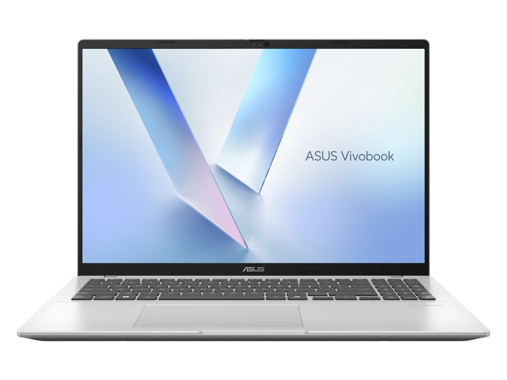
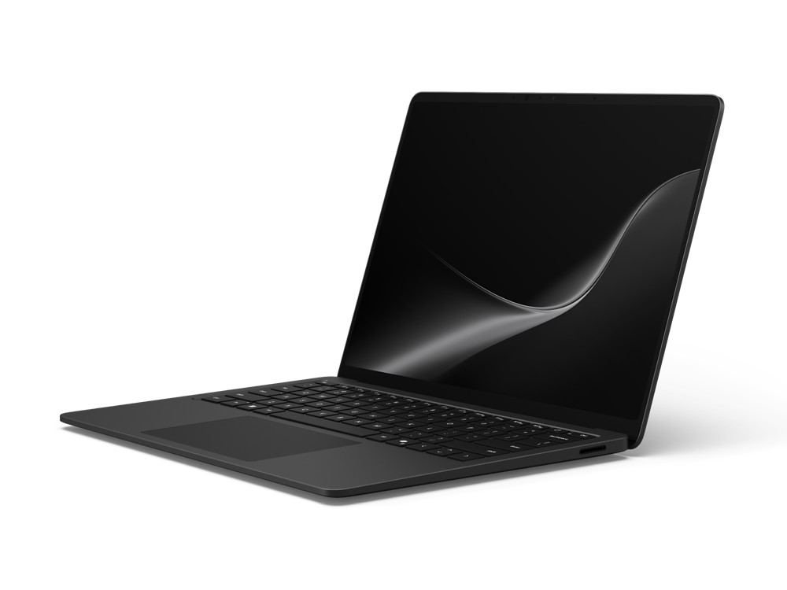
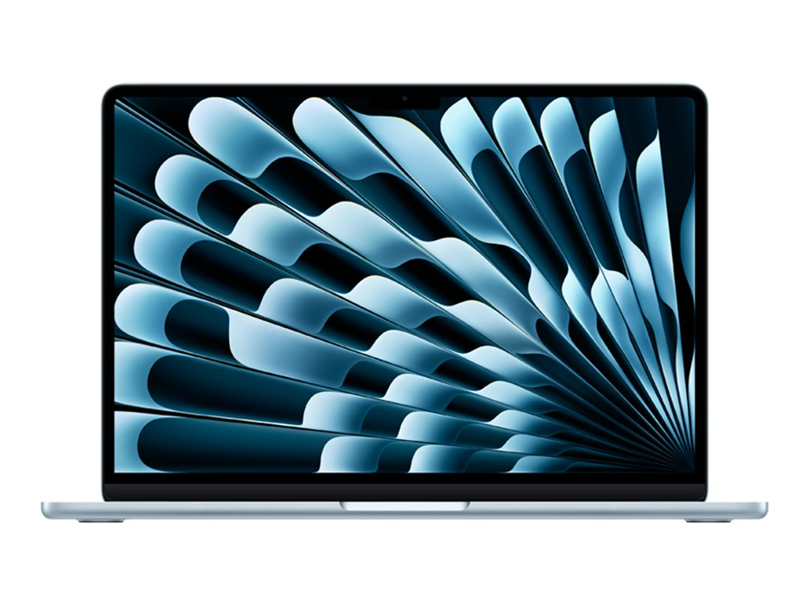
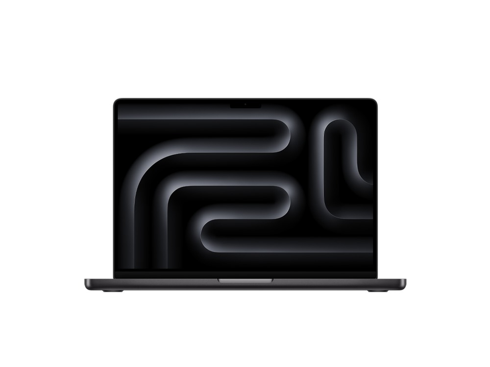

Qué mirar en un portátil para trabajar
- 16 GB de memoria. Con Teams, el navegador lleno de pestañas y una hoja de cálculo grande a la vez, 8 GB se quedan cortos en Windows.
- Pantalla de 14 pulgadas o más, mejor si es 16:10 o 3:2. Son más altas que las 16:9 y enseñan más líneas de un documento sin desplazarte.
- Un teclado cómodo. Vas a escribir horas: si puedes, pruébalo en tienda. Los ThinkPad son la referencia.
- Autonomía real de una jornada. La cifra del fabricante se mide con brillo bajo; con uso normal, cuenta con algo más de la mitad.
- Windows, macOS o Snapdragon. Si tu empresa usa programas o VPN solo para Windows, descarta macOS y comprueba antes un Snapdragon (ARM).
Seis portátiles para trabajar, de 749 € en adelante

ASUS Vivobook 16 — 749 €
Una pantalla de 16 pulgadas con formato 16:10 por 749 €: caben dos documentos uno al lado del otro sin forzar la vista. 84 de 100 en el perfil Trabajo, con 16 GB y 512 GB.
Piensa dos veces si: lo vas a llevar a diario; con 1,88 kg es más de escritorio que de mochila, y el fabricante no publica la autonomía.
Ficha del ASUS Vivobook 16 → Ver precio en Amazon →
Lenovo ThinkPad E14 Gen 6 — 899 €
Teclado de ThinkPad, 1,41 kg y 90 de 100 en Trabajo, la misma nota que portátiles que cuestan 400 € más. La opción sensata para oficina, teletrabajo y programar.
Piensa dos veces si: buscas una pantalla vistosa; es correcta, pero no OLED.
Ficha del Lenovo ThinkPad E14 Gen 6 → Ver precio en Amazon →
ASUS Zenbook 14 OLED — 1.099 €
OLED 3K a 120 Hz, 1 TB de disco y 1,22 kg. Sirve igual en la oficina que de viaje, y sale bien parado en casi todas las comparativas del sitio.
Piensa dos veces si: el presupuesto es justo; el ThinkPad E14 da la misma nota de Trabajo por 200 € menos.
Ficha del ASUS Zenbook 14 OLED → Ver precio en Amazon →
Microsoft Surface Laptop 8 — 1.349 €
Pantalla táctil 3:2, más alta que la de la mayoría, que enseña más líneas de un documento o una hoja de cálculo. Microsoft anuncia hasta 20 horas de vídeo y pesa 1,34 kg.
Piensa dos veces si: dependes de programas de Windows antiguos o muy específicos: con Snapdragon (ARM), compruébalo antes.
Ficha del Microsoft Surface Laptop 8 → Ver precio en Amazon →
MacBook Air 13" (M5) — 1.429 €
95 de 100 en Trabajo, 18 h de autonomía oficial y sin ventilador, así que no hace ruido. Si tu trabajo funciona en macOS, es el que más rinde por debajo de 1,5 kg.
Piensa dos veces si: tu empresa usa programas solo para Windows.
Ficha del MacBook Air 13" (M5) → Ver precio en Amazon →
MacBook Pro 14" (M5) — 2.229 €
Para edición de vídeo, desarrollo con proyectos grandes o máquinas virtuales: 97 de 100 en Trabajo, 1 TB y 24 h de autonomía oficial. Tiene ventilador y aguanta la carga larga sin bajar el ritmo.
Piensa dos veces si: trabajas con Office, correo y navegador: pagarías mucho por potencia que no vas a usar.
Ficha del MacBook Pro 14" (M5) → Ver precio en Amazon →Comparación rápida
| Modelo | Precio | Nota trabajo | Peso | Ideal para |
|---|---|---|---|---|
| ASUS Vivobook 16 | 749 € | 84 | 1,88 kg | Pantalla grande con poco dinero |
| Lenovo ThinkPad E14 Gen 6 | 899 € | 90 | 1,41 kg | Calidad-precio y teclado |
| ASUS Zenbook 14 OLED | 1.099 € | 90 | 1,22 kg | Windows equilibrado |
| Microsoft Surface Laptop 8 | 1.349 € | 91 | 1,34 kg | Teletrabajo y viajes |
| MacBook Air 13" (M5) | 1.429 € | 95 | 1,23 kg | Potencia sin peso ni ruido |
| MacBook Pro 14" (M5) | 2.229 € | 97 | 1,55 kg | Vídeo, desarrollo, trabajo pesado |
Nota del perfil Trabajo del comparador, sobre 100.
Para teletrabajar y hacer videollamadas
En casa pasas horas delante de la misma pantalla, y la batería importa menos si trabajas enchufado. Lo que más se nota es una pantalla grande o alta, un teclado cómodo y 16 GB para tener Teams o Zoom abiertos sin que todo vaya a tirones. Si vas a usar monitor externo, comprueba que el portátil tenga la salida que necesitas. El ThinkPad E14 y el Vivobook 16 cubren bien este uso con poco dinero.
Para programar
16 GB como mínimo (24 o 32 GB si usas máquinas virtuales o Docker con varios servicios), buen teclado y una pantalla de 14 pulgadas o más. En Windows, el ThinkPad E14 es la opción sensata; si trabajas con macOS, el MacBook Air M5 o, para proyectos grandes, el MacBook Pro 14 M5. Si necesitas una gráfica NVIDIA (para IA o CUDA), mira la guía de portátiles gaming.
Todos los portátiles con buena nota de trabajo
Los modelos del catálogo con 84 o más en el perfil Trabajo, ordenados por precio. Por encima de 2.229 € están los MacBook Pro con M5 Pro y M5 Max, solo necesarios para trabajo profesional muy exigente.
| Modelo | Precio | Nota trabajo | Peso | Autonomía |
|---|---|---|---|---|
| ASUS Vivobook 16 | 749 € | 84 | 1,88 kg | Sin dato |
| Lenovo ThinkPad E14 Gen 6 | 899 € | 90 | 1,41 kg | 10 h |
| Dell 14 (DC14250) | 900 € | 84 | 1,56 kg | Sin dato |
| ASUS Zenbook 14 OLED | 1.099 € | 90 | 1,22 kg | 12 h |
| MacBook Air 13" (M4) | 1.199 € | 89 | 1,24 kg | 18 h |
| HP OmniBook 5 14 | 1.249 € | 89 | 1,34 kg | Sin dato |
| Microsoft Surface Laptop 7 | 1.299 € | 90 | 1,34 kg | 16 h |
| Microsoft Surface Laptop 8 | 1.349 € | 91 | 1,34 kg | 20 h |
| Dell XPS 13 | 1.399 € | 92 | 1,19 kg | 14 h |
| Samsung Galaxy Book4 Pro | 1.399 € | 91 | 1,23 kg | 12 h |
| MacBook Air 13" (M5) | 1.429 € | 95 | 1,23 kg | 18 h |
| Samsung Galaxy Book5 Pro 14" | 1.699 € | 92 | 1,23 kg | 21 h |
| MacBook Air 15" (M5) | 1.729 € | 95 | 1,51 kg | 18 h |
| MacBook Pro 14" (M5) | 2.229 € | 97 | 1,55 kg | 24 h |
Precios orientativos de referencia. Autonomía según el fabricante; «Sin dato» cuando no la publica.
¿Dudas entre dos? Las comparativas enfrentan los que más se confunden, como el Surface Laptop 8 contra el MacBook Air M5 o el ThinkPad E14 contra el OmniBook 5 14. Si además lo vas a llevar a diario, mira la guía de portátiles ligeros, y si dudas de sistema, MacBook o Windows.
Preguntas frecuentes
¿Cuál es el mejor portátil para trabajar?
Depende del presupuesto. Calidad-precio: el Lenovo ThinkPad E14 Gen 6 (899 €), con 90 de 100 en Trabajo. En Windows de gama alta, el Dell XPS 13 (92). El que más rinde por debajo de 1,5 kg es el MacBook Air 13" con M5 (95).
¿Qué portátil comprar para teletrabajar?
Uno con buena autonomía, 16 GB de memoria y una pantalla cómoda para muchas horas: 14 pulgadas o más, o formato 3:2 o 16:10. El Microsoft Surface Laptop 8 y el MacBook Air M5 destacan por batería; el ThinkPad E14, por teclado y precio.
¿Cuánta RAM necesito para trabajar?
16 GB es lo recomendable hoy para Office, navegador con muchas pestañas y videollamadas a la vez. 8 GB se quedan cortos en Windows. Para máquinas virtuales, edición de vídeo o proyectos grandes de programación, mejor 24 o 32 GB.
¿Es mejor un portátil de 14 o de 16 pulgadas para trabajar?
14 pulgadas si lo mueves a menudo: pesa menos y cabe en cualquier mochila. 16 pulgadas si trabajas casi siempre en la misma mesa y quieres dos ventanas cómodas. Si usas monitor externo en casa, el tamaño importa menos.
¿Sirve un MacBook para trabajar en una empresa?
Sí, en la mayoría de trabajos de oficina: Office, Teams, Zoom y el navegador funcionan igual. Comprueba antes si tu empresa usa algún programa o VPN solo para Windows.
Compáralos con tu perfil
Elige el perfil Trabajo y enfrenta dos modelos para ver cuál gana y cuánto cuesta la diferencia.
Abrir el comparador